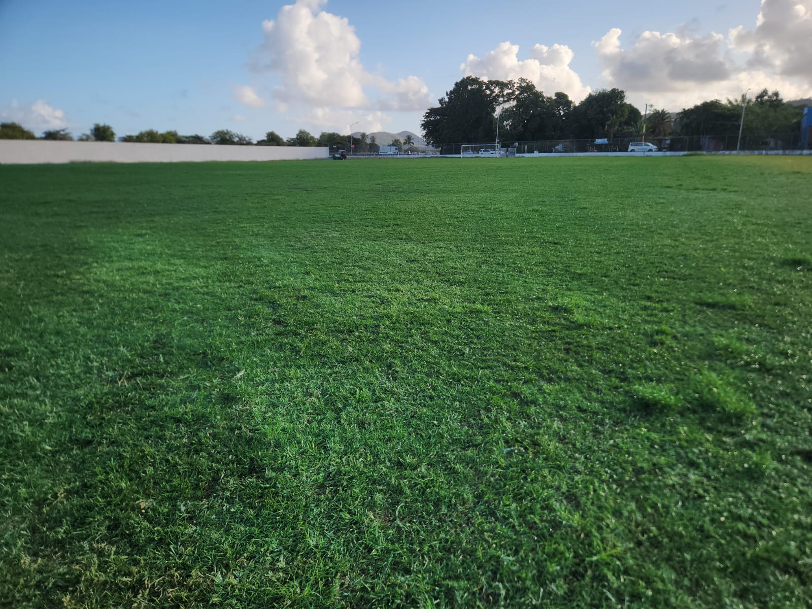
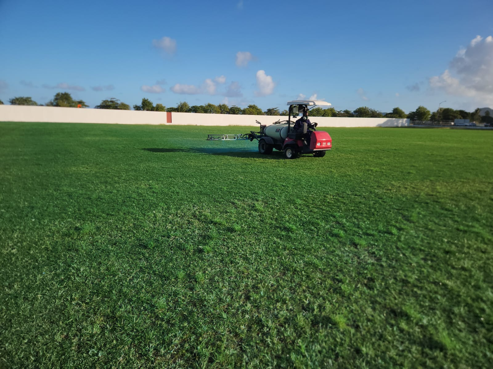

Explore Turf Pro’s Work Across Saint Lucia
From lawn maintenance and drainage systems to turf care and site preparation, Turf Pro Landscaping delivers expert outdoor solutions across Saint Lucia.



